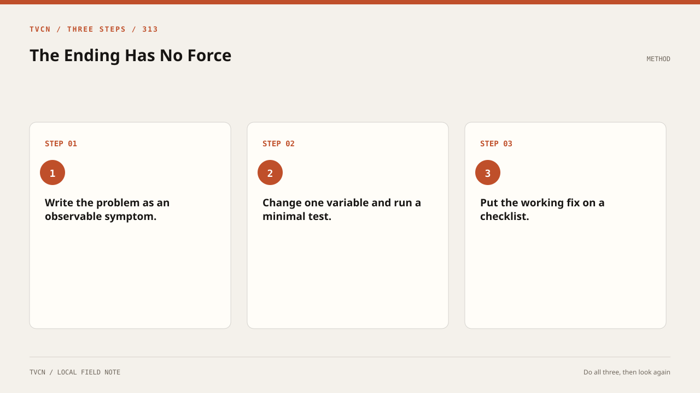

On set
Make the character pay a price, choose, and stop on the action after the choice.
Do this
A weak ending usually means the character paid no price. Make them choose, then stop.
- Turn the ending into a choice where both options cost something.
- Let them make the choice; do not let someone else solve it.
- End on a concrete action: close the door, put down the key, walk away. Do not explain.
Avoid
Do not push emotion with crying or music; the cost must be visible.
Three-step flow

Three causes
For “The Ending Has No Force”, check three directions first. Change one variable, record a 30-second comparison, and see which link the change follows.
| Cause | Signal on set | Five-minute test |
|---|---|---|
| Too much explanation | Voice-over summarises the theme and leaves nothing for the audience | Remove the summary and end on action |
| Ending on the answer | The character already has the result and the film explains it | End at the moment of choice |
| No cost | Nothing is lost, so the emotion has nowhere to land | Make the choice carry a visible cost |
On-set diagnosis
- Find the last choice in the film: what the character decides to do or not do.
- See whether the last shot sits before, during or after the choice; if it sits too long after, shorten it.
- Watch the last ten seconds with sound off; does the picture still work?
Fix
An ending does not exhaust the story; it leaves the character inside a choice. The audience should leave with a question, not a summary.
- Hold one or two seconds after the choice; do not add an explanation shot.
- Put the theme in an action: close a door, set down keys, turn away.
- Remove voice-over summaries and title cards; put any necessary note outside the film.
- Leave the last shot unfinished: a hand in mid-air, a door not fully closed.
Failure cases
With “The Ending Has No Force”, these three moves make it worse. Pick one replacement action and do not change three variables at once.
| Failure | Why it gets worse | Replace with |
|---|---|---|
| Add a montage summary | The emotion repeats and the audience waits for credits | Keep one action |
| Add voice-over | The theme is stated and the image loses weight | Let the image end itself |
| End on the answer | Once the character has the result, the scene is over | End on the choice, not the result |
Acceptance table
Acceptance is not “it feels better”; all four must be identifiable, playable and logged.
| Check | Pass line | Log |
|---|---|---|
| Last choice | The ending contains an identifiable choice | Mark the timecode |
| Duration | No more than two seconds after the choice | Watch the last ten seconds |
| Explanation | No voice-over or card summarises the theme | Inspect the tail |
| Aftertaste | The last shot holds an unfinished action | Play it back |
Image note. Covers, diagrams and step images on this page are editorial illustrations or structure diagrams, not photographs of a test performed here; they are not evidence of measured gear performance. Where an image is AI-assisted, the caption says so. Read the test conditions in the text before treating an image as proof.